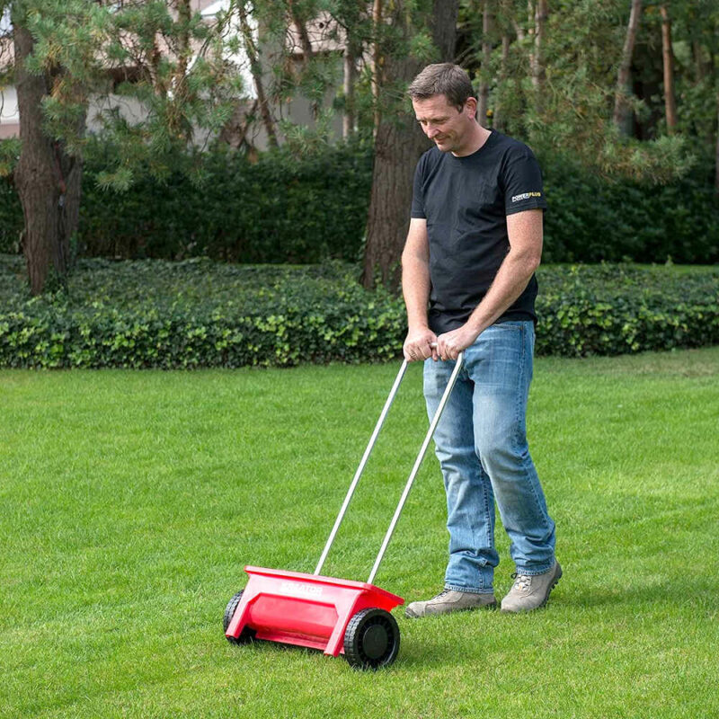

Introducción
En esta página encontraremos las palabras más comunes para la letra E.
| Escardadora | Esparcidor |
|---|---|
|  | |
| Es una herramienta de jardinería diseñada para eliminar las malas hierbas o malezas del suelo. | Es una herramienta utilizada para esparcir de manera uniforme fertilizantes, semillas u otros materiales en el suelo. |
| Enrejado | Entutorado |
| Es una estructura utilizada en jardinería para soportar el crecimiento de plantas trepadoras, como enredaderas o rosales trepadores. | Es una técnica de jardinería que implica el uso de estacas o enrejados para sostener y guiar el crecimiento de las plantas. |
| Escardillo | |
| Es una herramienta de jardinería similar a una azada, pero con una cabeza más pequeña y puntiaguda. Se utiliza para arrancar o cortar las malas hierbas en el jardín o en macizos de flores. | |